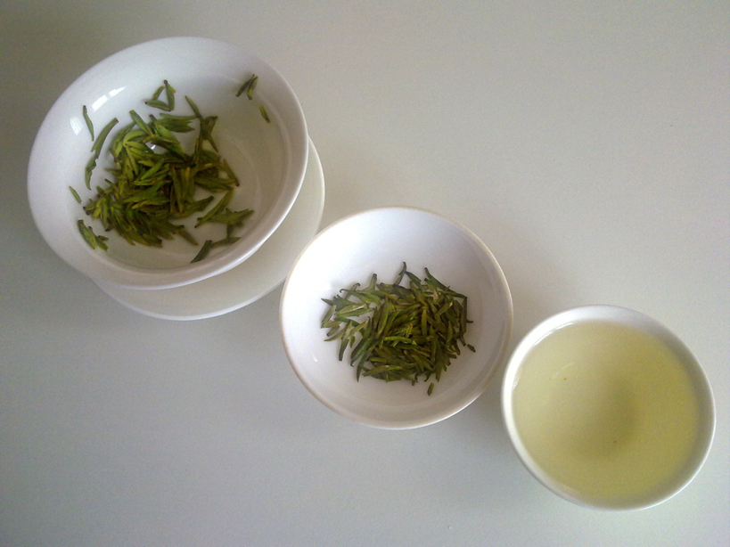

Mark Bear

Mark Firman Bear is an American neuroscientist. He is currently the
Picower Professor of Neuroscience at The Picower Institute for Learning
and Memory at Massachusetts Institute of Technology. He is a former
Howard Hughes Medical Institute Investigator; an Elected Fellow of the
American Association for the Advancement of Science and the American
Academy of Arts and Sciences; and a Member of the National Academy of
Medicine.
class="
Green tea

Green tea is a type of tea that is made from Camellia sinensis leaves
and buds that have not undergone the same withering and oxidation
process which is used to make oolong teas and black teas.
Green tea originated in China, and since then its production and
manufacture has spread to other countries in East Asia.
Several varieties of green tea exist, which differ substantially
based on the variety of C. sinensis used, growing conditions,
horticultural methods, production processing, and time of harvest.
class="blacktea-inna"
Black tea

Black tea (also literally translated as red tea from various East
Asian languages), is a type of tea that is more oxidized than oolong,
yellow, white and green teas. Black tea is generally stronger in flavour
than other teas. All five types are made from leaves of the shrub
(or small tree) Camellia sinensis, though Camellia taliensis
is also used rarely